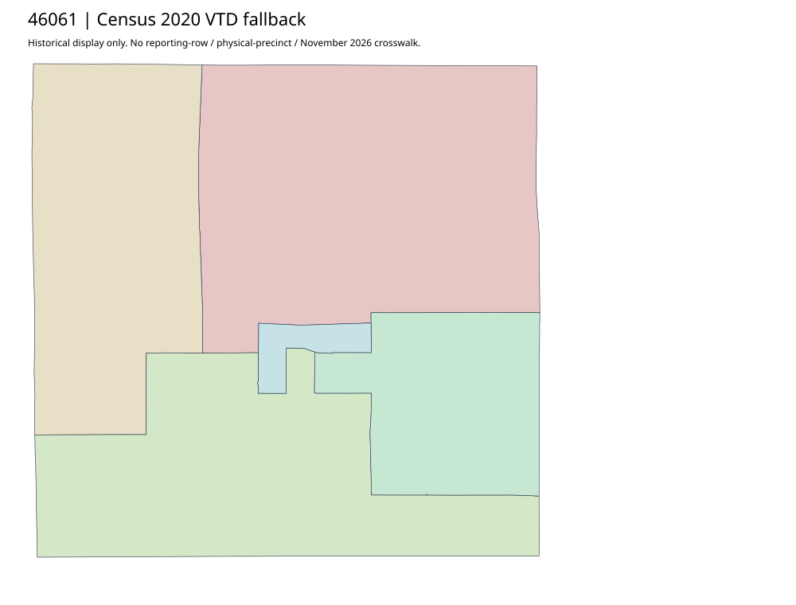

304 ordered indexHanson | 46061
Official homepage links an acquired auditor parent and current election event; separate sample ballot PDF is not map geometry. No actual precinct-boundary original located in bounded county HTML. Census2020 complete five-VTD fallback retained; no polygon from ballot labels.
1 priority / 5 full historical observations. Parent is a summary ancestor, not additive to leaves. No physical feature matches or current reporting crosswalk approved.
Acquired shared-parent assets
No complete county precinct-map original acquired from this bounded chain. Use qualified fallback; roster/landing/error bodies are retained as evidence.
Census2020 fallback
5 native historical VTD features. Entire785-feature ZIP original retained once, all66 counties. Yankton has one countywide VTD. No current/reporting allocation. complete original gzip

Full binary/attribute/geometry QA
Observed authority/acquisition routes
Complete SOS authority fields including original blank/masked values: parent inventory. No contacts were sent.
Ordered full children
- Precinct-1 | 684 source votes | priority
- Precinct-2 | 392 source votes | remainder
- Precinct-4 | 327 source votes | remainder
- Precinct-3 | 324 source votes | remainder
- Precinct-5 | 319 source votes | remainder